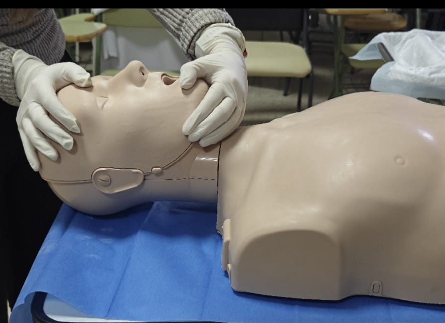
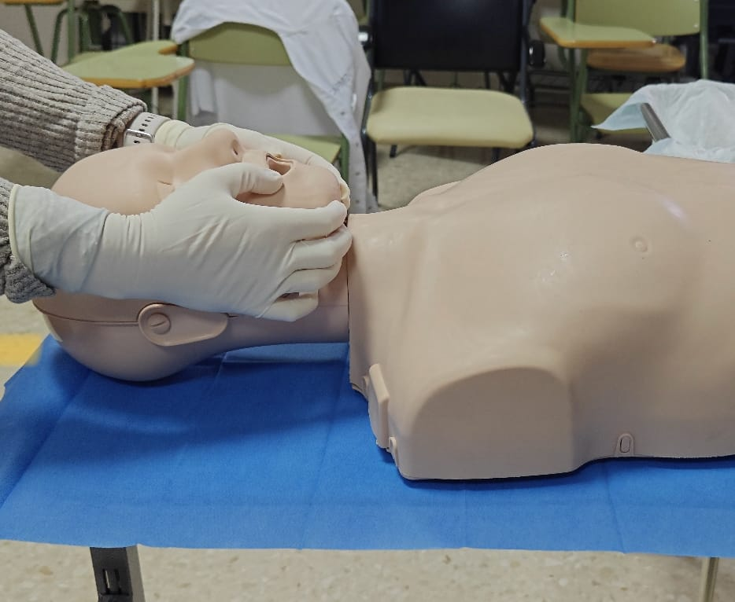
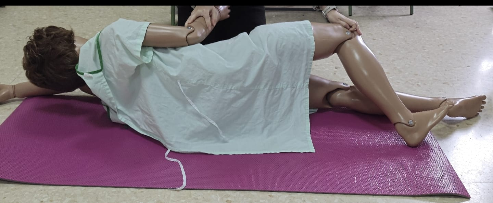
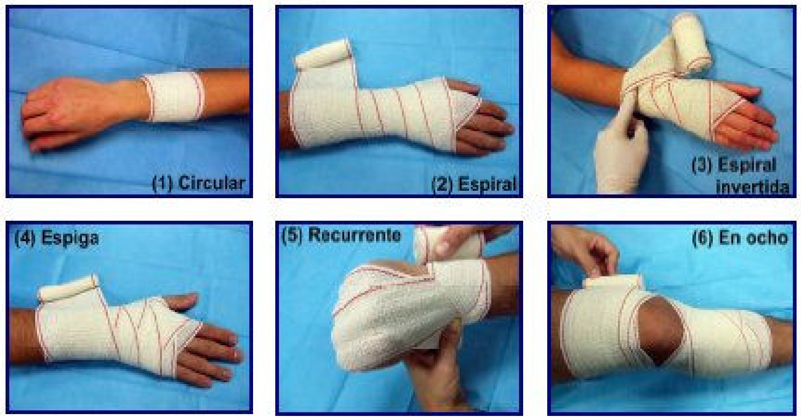

El juego "Los Salvavidas" está diseñado para poner a prueba y reforzar los conocimientos en primeros auxilios y en emergencias sanitarias. Para participar, los jugadores deben conocer y comprender los siguientes conceptos clave:
Valoración inicial en Emergencias
Los jugadores deben aplicar el protocolo PAS (Proteger, Avisar, Socorrer) para actuar de forma segura y efectiva en una emergencia. También deben dominar la técnica VOS (Ver, Oír, Sentir) para evaluar el estado de la víctima y saber cuándo activar los servicios de emergencia (112 o 061).
Protocolo PAS (Proteger, Avisar, Socorrer)
- Proteger: Asegurar que la escena es segura antes de intervenir.
- Avisar: Llamar a los servicios de emergencia 112 o 061.
- Socorrer: Evaluar el estado de la víctima e iniciar los primeros auxilios adecuados.
Valoración Inicial de la Víctima (VOS)
- Ver si la persona responde o tiene movimientos.
- Oír si hay sonidos respiratorios normales.
- Sentir la respiración acercando la mejilla y observando el movimiento torácico.
Si la persona no responde ni respira con normalidad, llamar a emergencias y comenzar RCP.
Números clave en la Activación de los Servicios de Emergencia
- 112: Número general de emergencias en Europa.
- 061: Emergencias sanitarias (Andalucía).
- 91 562 04 20: Servicio de Información Toxicológica
Qué decir al llamar a emergencias:
- Ubicación exacta del incidente.
- Estado de la víctima.
- Medidas que se han tomado.
- No colgar hasta que el operador lo indique.
|
Apertura de la Vía Aérea: Maniobra Frente-Mentón
|
 | |
|
Apertura de la Vía Aérea: Maniobra de tracción mandibular Se utiliza si hay sospecha de traumatismo cervical.
|
 | |
|
Posición lateral de seguridad (PLS) Se utiliza en una persona inconsciente pero que respira de manera estable. Su objetivo es mantener la vía aérea abierta y evitar la asfixia por vómito o fluidos.
|
 |
Reanimación Cardiopulmonar (RCP)
Para ganar se debe conocer cómo realizar una RCP en adultos, niños y lactantes, así como el uso del Desfibrilador Externo Automático (DEA) para aumentar las posibilidades de supervivencia en un paro cardíaco.
Adultos
| Instrucciones | Vídeo |
|
Niño
| Instrucciones | Vídeo |
|
Lactante
| Instrucciones | Vídeo |
|
Desfibrilador Externo Automático (DEA)
| Instrucciones | Vídeo |
En niños <8 años, usar atenuador pediátrico o electrodos específicos. |
Atragantamientos (Maniobra de Heimlich)
Los jugadores deben saber identificar y actuar ante un atragantamiento en adultos, niños y lactantes, aplicando correctamente los golpes en la espalda y las compresiones abdominales o torácicas según la edad de la víctima.
Adultos y niños mayores de 1 año
| Instrucciones | Vídeo |
|
Lactantes
| Instrucciones | Vídeo |
Si la víctima queda inconsciente, iniciar RCP inmediatamente. |
Movilizaciones de Emergencia
En primeros auxilios es fundamental conocer diferentes técnicas de traslado tanto sin material como con material, asegurando siempre la seguridad del herido.
Métodos de movilización sin material
Rescate con una sola persona
- Colocarse detrás del sujeto, cerca de la cabeza y los hombros.
- Colocar los brazos y las piernas del sujeto cerca del cuerpo si es posible.
- Colocar las manos en las axilas de la víctima y arrastrar de él.
- Colocar al sujeto tan cómodamente como sea posible con un mínimo de movimientos.
Asistencia para caminar con una sola persona
- Colocar el brazo del sujeto en torno al cuello propio y mantener su mano cerca de nuestro pecho.
- Coger al sujeto por la cintura con la mano libre.
- Aconsejar al sujeto que se apoye sobre uno según lo necesite a medida que avance.
Ayuda de transporte con cuatro manos
- “Cógete el antebrazo derecho con la mano izquierda”.
- “Cógete a mi antebrazo izquierdo con la mano derecha.” Mientras tanto nosotros debemos hacer lo propio.
- Hay que decirle al sujeto lesionado que se siente sobre los brazos y pase sus brazos por encima de los hombros de los dos.
Métodos de movilización con material
|
Camilla cuchara
|
|
|
Puente holandés
|
Camilla cuchara: Técnica para levantar y trasladar a una víctima inmovilizada.
https://youtu.be/s7fyR3S_M-A
Transporte a 4 manos: Para mover a una persona consciente con ayuda de otro rescatador
Inmovilizaciones y Vendajes
Los jugadores deben saber aplicar diferentes tipos de vendajes para la correcta inmovilización de extremidades o articulaciones:
- Circular (para fijar apósitos).
- En espiga (para articulaciones).
- En ocho (para tobillo o clavícula).
- Cabestrillo (para sostener un brazo lesionado).
Fuente: Rodríguez Orellana, S., Banderas de las Heras, P., & Pendón Nieto, M. E. Manual de enfermería en vendajes.
Recuperado de https://urgenciasaneloy.com/wp-content/uploads/2015/10/vendajes-para-enfermerc3ada-manual.pdf
Quemaduras
Una quemadura es una afectación de los tejidos, provocada por una exposición a temperaturas extremas o contacto con diferentes sustancias químicas. Clasificamos las quemaduras en 3 tipos según el origen que las produce:
- Quemadura térmica: producida por un aumento de temperatura.
- Quemadura química: producida por el contacto con una sustancia química.
- Quemadura eléctrica: producida por el paso de una corriente eléctrica.
La gravedad de la quemadura siempre depende de 2 factores: de la intensidad de la fuente y del tiempo de exposición.
Las quemaduras se clasifican en tres grados según la profundidad del daño en la piel:
- 1º Grado (superficiales): Solo afecta a la capa externa de la piel (epidermis). Su tratamiento básico irá encaminado a enfriar e hidratar la zona. Aplicar agua fría durante 10-15 minutos.
- 2º Grado (Parciales): Afecta a la epidermis y parte de la dermis. Su tratamiento se basará en el enfriamiento hidratación de la zona sumergiéndola en agua tibia durante 15 a 20 minutos.
- 3º Grado (Profundas): Afecta a la epidermis, dermis y tejidos más profundos como nervios y músculos. Es una emergencia médica. Por lo tanto hay que llamar a los servicios de emergencias, cubrir la quemadura con un paño limpio y seco y mantener a la persona estable hasta que llegue la ayuda. No aplicar agua ni quitar la ropa adherida.
NO romper ampollas para evitar infecciones
Hemorragias
La hemorragia o el sangrado es la pérdida de sangre. El sangrado se puede presentar:
- Dentro del cuerpo, cuando la sangre se filtra desde los vasos sanguíneos u órganos
- Fuera del cuerpo, cuando la sangre fluye a través de una abertura natural (como el oído, la nariz, la boca, la vagina o el recto)
- Fuera del cuerpo, cuando la sangre sale a través de una ruptura en la piel
Tratamiento:
- Si la herida afecta solo las capas superiores de la piel (superficial), lávala con jabón y agua tibia, y sécala con palmaditas suaves. El sangrado de heridas superficiales o rasguños (abrasiones) es lento.
- Retira cualquier residuo suelto o suciedad visible de la herida.
- No retires objetos, como un cuchillo, trozo de madera o flecha, que esté enterrado en el cuerpo. Hacerlo puede causar más daño y sangrado. Coloca almohadillas y vendajes alrededor del objeto y pégalo con cinta en el lugar.
- Aplica presión directa sobre una herida externa con un vendaje estéril, un trozo de tela limpio o incluso con una prenda de vestir. Si no hay otra cosa disponible, usa las manos.
- Mantén la presión hasta que se detenga el sangrado. Cuando este se haya detenido, envuelve fuertemente el apósito sobre la herida con cinta adhesiva o con un pedazo de tela limpio.
- Si el sangrado continúa y se filtra a través del material que está siendo sostenido sobre la herida, no lo retires. Simplemente, coloca otro vendaje sobre el primero. Asegúrate de buscar atención médica de inmediato.
- Si el sangrado es intenso, consigue ayuda médica de inmediato y toma las medidas necesarias para evitar el shock. Manteniendo la parte del cuerpo lesionada completamente inmóvil. Acuesta a la persona horizontalmente, levántale los pies unos 30 centímetros y cúbrala con un abrigo o una manta.